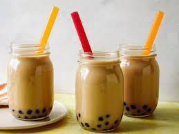

Brown Sugar Boba

Description:
We aren't just making the flavored milk tea... When I say homemade, I mean everything. From the fresh brewed milk tea all the way down to the brown sugar syrup and the homemade tapioca pearls, also known as boba pearls!
Ingredients:
Brown Sugar Boba Pearls:
- 1 cup (120g) tapioca starch
- 1/3 cup (78ml) water
- 1/3 cup packed (65g) brown sugar
Brown Sugar Syrup:
- 1 1/4 cups (250g) brown sugar
- 6 1/2 tbsp (100ml) water
- 1 tbsp (19g) molasses (added after boba is mixed in)
Milk:
- 2 cups milk
- 2 tbsp black tea
Steps:
Brown Sugar Boba Pearls:
- In a small saucepan, add in water and brown sugar and heat until boiling.
- Reduce heat to low and add in half the tapioca starch, quickly mixing in for 6-8 seconds, turn off the heat, and mix in the rest of the tapioca starch mixing until it forms a dough.
- Dump the dough out onto a work surface, and knead until a smooth dough forms.
- Divide the dough into four equal pieces, and roll each piece into a long rod (½-inch thick) then cut into small cubes.
- Roll the small cubes into balls and toss them into a bowl with tapioca starch to coat.
- Dump into a fine-mesh sieve to shake off the excess. Store in an airtight container in the freezer or use immediately.
- To cook, heat a medium pot of water over medium-high heat until boiling then add the pearls to the water. Boil for 30 minutes.
- Cut the heat and let the pearls rest in the water for 20-25 minutes.
- For the syrup, add water and brown sugar to a small saucepot, swirl to combine, and heat over medium heat until it dissolves and starts to bubble. Increase heat to medium-high. Once large bubbles form and reduced, check the thickness by placing a dollop on a plate and checking with your fingers.
- Once syrupy, cut the heat.
- Drain boba pearls through a fine-mesh strainer. Stir into the syrup mixture along with molasses.
Milk Tea:
- To a small saucepan, add whole milk (or nut milk) and heat over medium heat stirring occasionally until it reaches 162F then immediately remove from heat.
- Mix in loose leaf black tea and let steep for 4-8 minutes, or until it reaches the desired strength of flavor.
- Strain the tea through a fine-mesh strainer. Cool in the refrigerator or over an ice bath before using.
- To a glass, spoon in as many boba pearls as desired then top with syrup.
- Add in the ice cubes before pouring in the chilled milk tea and serving.